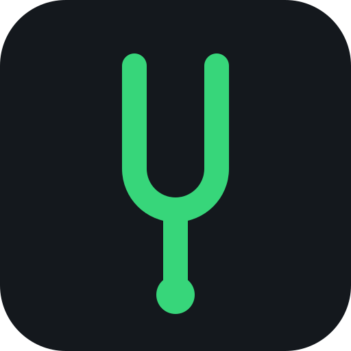

Diapasão · Afinador
–
— Hz— cents
AFINADOR DESLIGADO
Calibração
A4 = 440 Hz
Diapasão sonoro
Enquanto o tom toca, a detecção do afinador fica pausada. iPhone: desative o modo silencioso para ouvir o tom.